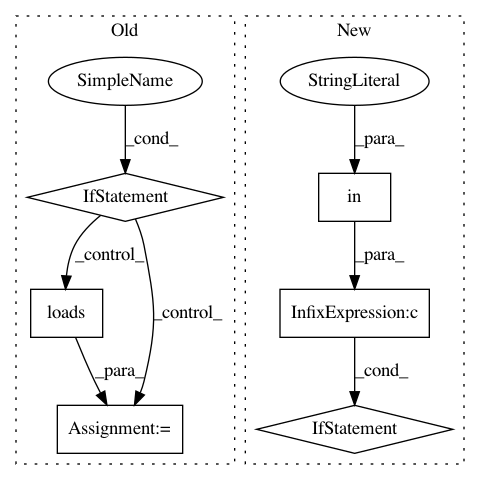

ca10c185d94470054d693f19e7691523dbe3ec55,skll/data/readers.py,NDJReader,_sub_read,#NDJReader#Any#,434
Before Change
line = line.strip()
// If this is a comment line or a blank line, move on
if line.startswith("//") or not line:
continue
// Process good lines
example = json.loads(line)
// Convert all IDs to strings initially,
// for consistency with csv and megam formats.
curr_id = str(example.get("id",
"EXAMPLE_{}".format(example_num)))
class_name = (safe_float(example["y"],
replace_dict=self.class_map)
if "y" in example else None)
example = example["x"]
After Change
// if it"s PY2 and `id` is in the
// data frame, make sure it"s a string
if PY2 and "id" in df:
df["id"] = df["id"].astype(str)
// convert the features to a
// list of dictionaries
features = df["x"].tolist()
return self._parse_dataframe(df,
"id" if "id" in df else None,
"y" if "y" in df else None,
In pattern: SUPERPATTERN
Frequency: 3
Non-data size: 6
Instances
Project Name: EducationalTestingService/skll
Commit Name: ca10c185d94470054d693f19e7691523dbe3ec55
Time: 2019-03-05
Author: jbiggs@ets.org
File Name: skll/data/readers.py
Class Name: NDJReader
Method Name: _sub_read
Project Name: commonsense/conceptnet5
Commit Name: db4b9f4d50af9e83733fc301c32e85cbe6d9c812
Time: 2014-02-25
Author: rob@luminoso.com
File Name: conceptnet5/builders/json_to_solr.py
Class Name:
Method Name: convert_to_solr
Project Name: GoogleCloudPlatform/PerfKitBenchmarker
Commit Name: dc0eb66a399d49e13b7e6beda0f726737eedb520
Time: 2016-09-06
Author: nlavine@google.com
File Name: perfkitbenchmarker/providers/digitalocean/digitalocean_virtual_machine.py
Class Name: DigitalOceanVirtualMachine
Method Name: _Delete